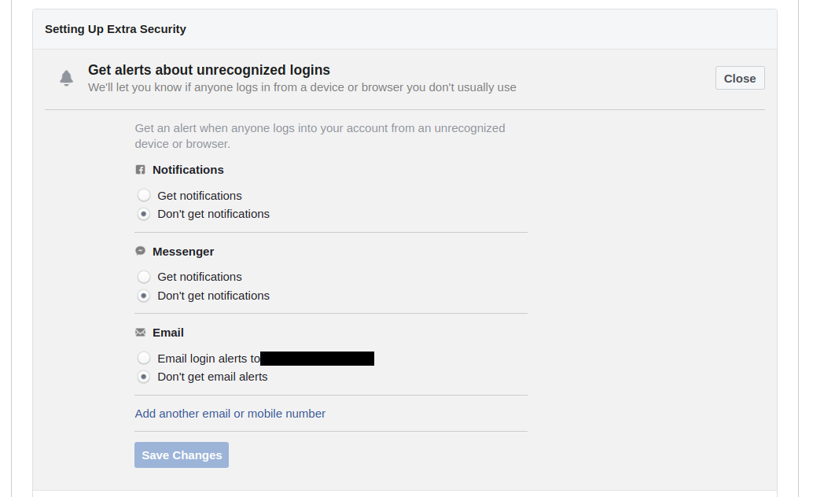

Additional Checks
These few steps have made sure that no one else than yourself has access to your account, yet Facebook is a complex ecosystem that often involves more risk than just having other people access your account, as more data than we often think is available publicly. here are a few extra steps you should consider to increase your security and privacy.
Enable Alerts when Someone Login from a new Place
Facebook as an interesting feature to send you alerts each time someone login to your account from a new location or device. You should consider enabling it. The alerts can be delivered on Facebook, on Facebook Messenger or by email.
To enable it, go to the page Settings > Security and Login and check the section "Get alerts about unrecognized logins". You can here enable this feature with the type of alert you want :

Review Your Privacy Settings
By default, Facebook allows a large access to your publications. If you have any risk of someone stalking at your Facebook activity, you should consider the following actions :
- Review who can see your posts. If you change the visibility of your posts, you may consider also limited the visibility of your past posts.
- Limit the indexation of your profile by search engines
- Limit or disable the sharing of your location
If you are at risk of harassment on Facebook, you should consider the following actions :
Additional Resources
If you are looking for resources on how to be more secure and private on Facebook, you should have a look at the following resources :
- A Guide to Staying Safe on Facebook by Women's Aid